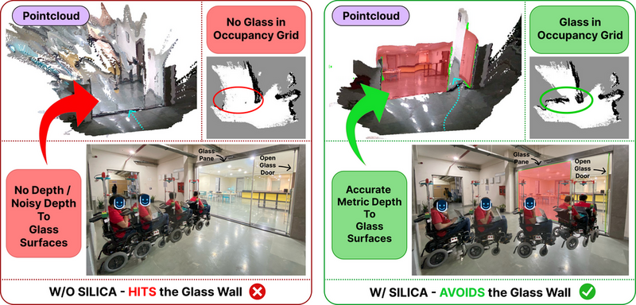
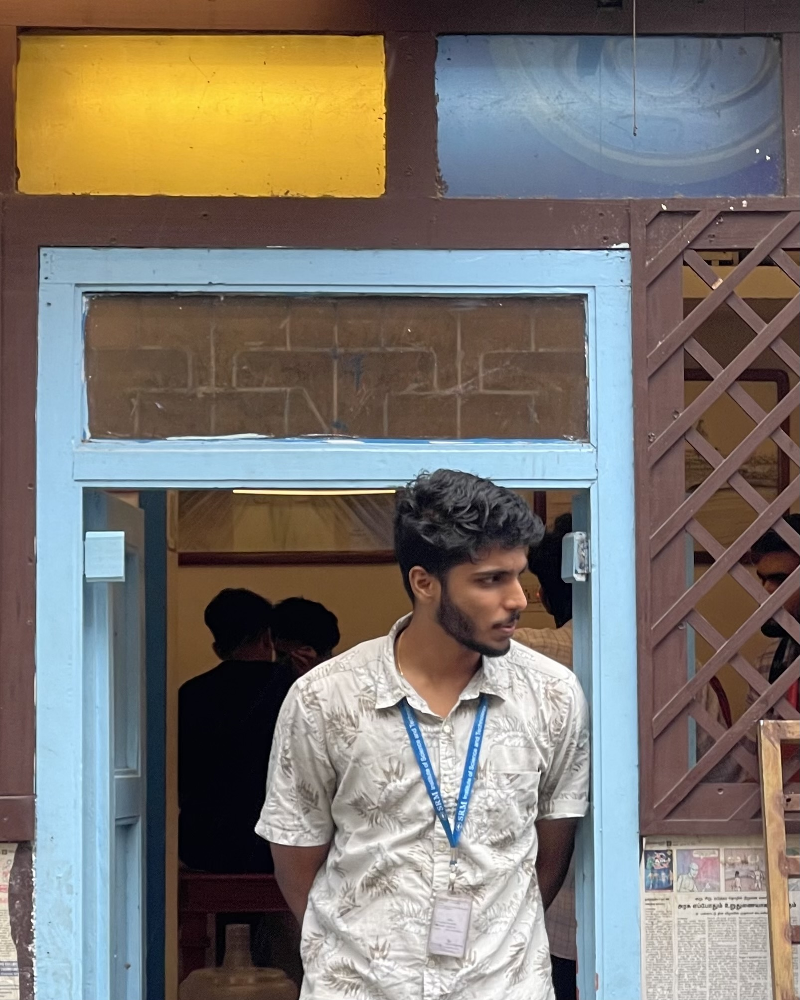
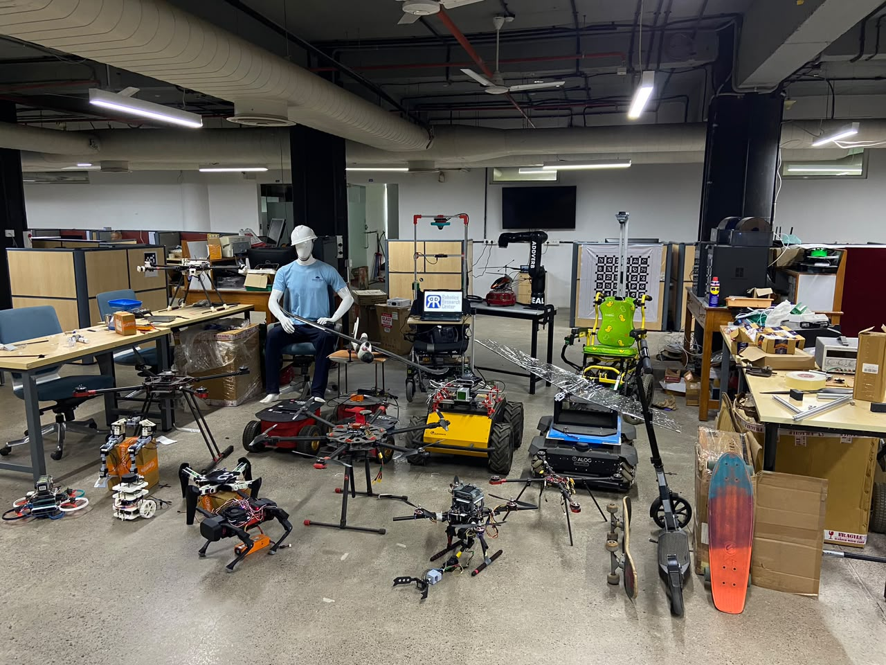
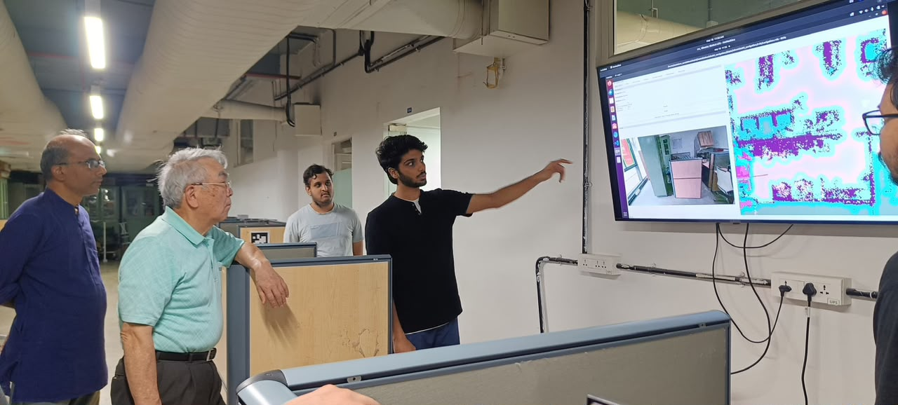
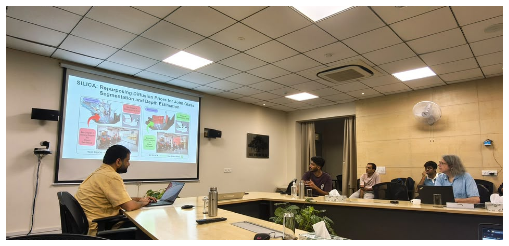
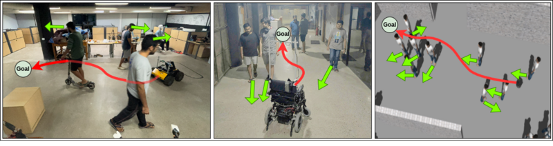
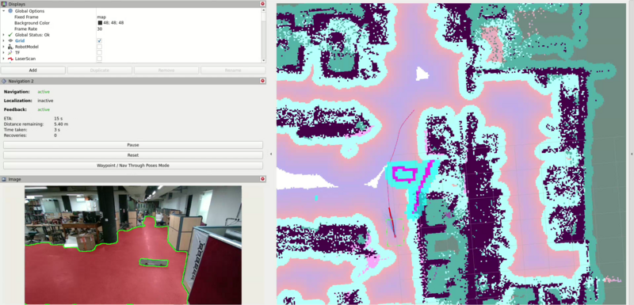
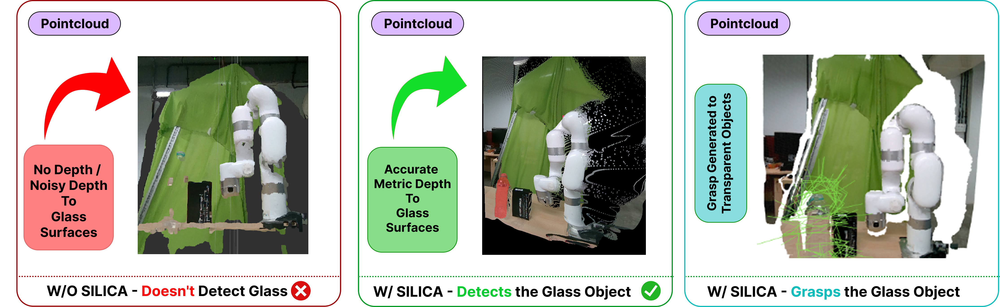
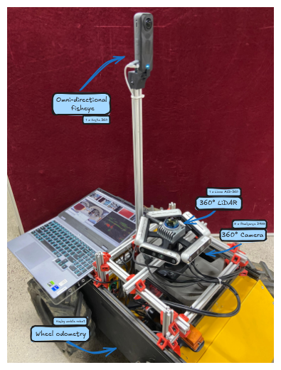
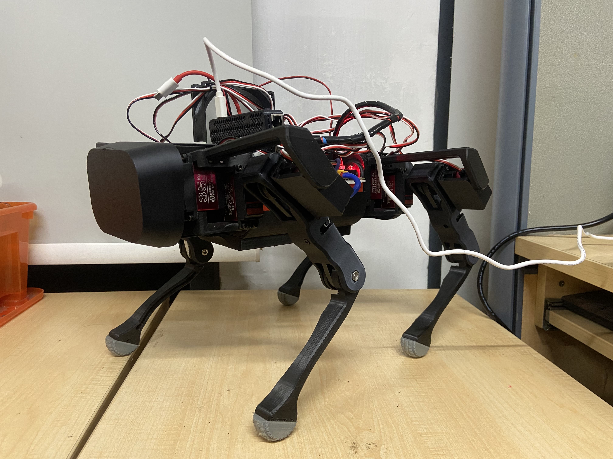

SILICA: Repurposing Diffusion Priors for Joint Glass Segmentation and Depth Estimation
IEEE/RSJ International Conference on Intelligent Robots and Systems (IROS), 2026


administrator at RRC. In these roles, I often represent my team and RRC to lab visitors, notably Prof. Takeo Kanade
, Prof. Andrew Zisserman
, and members of the IEEE Robotics and Automation Society (RAS), presenting my team's work and my own research.


Used diffusion foundation model priors to segment the traversable floor and estimate depth indoors, and wrote a Numba-based GPU MPPI controller that is soft-constrained to plan trajectories only within the traversable region.

Trained SILICA with CLIP conditioning to predict glass objects and glass scenes separately, greatly reducing false positives. The resulting segmentation and depth feed NVIDIA GraspGen for grasp generation, with an RRT* planner to reach and pick up the object.

Wrote a C++ ROS 2 driver and image stitcher for the Insta360 camera, and designed a synchronization method from scratch to align its untimestamped images with a Livox MID-360 LiDAR. Also built a targetless extrinsic calibration pipeline for the LiDAR, five RealSense cameras and the Insta360 using LightGlue. This setup was used to collect over 2 TB of multi-sensor data in a shopping mall.

Designed a 12-servo controller PCB with micro-ROS firmware in C, and wrote a ROS 2 actuator driver, body-to-leg inverse kinematics, and a C++ IMU-based controller that tracks target body motions.